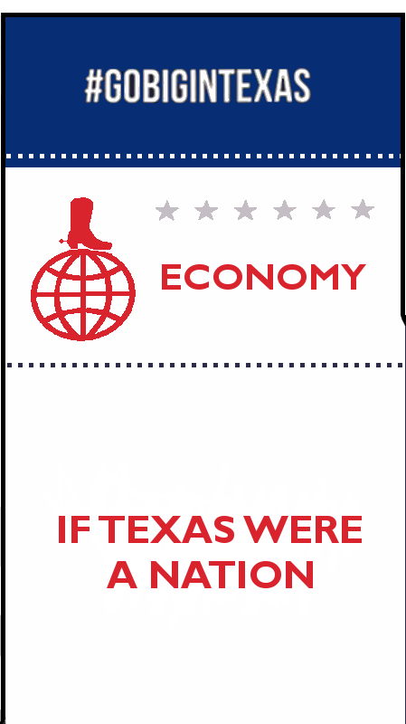
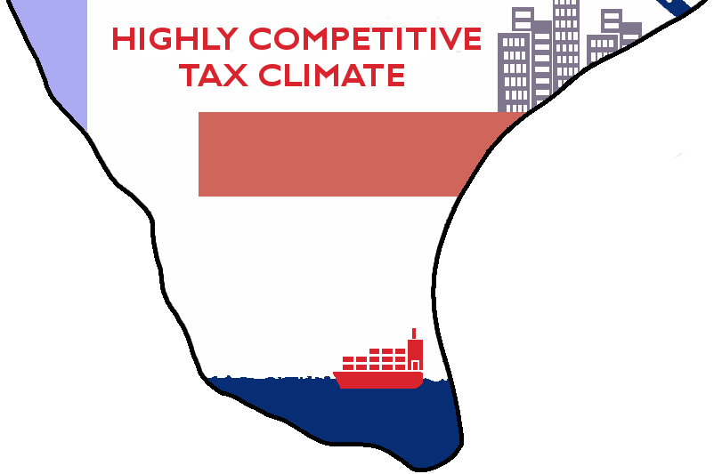
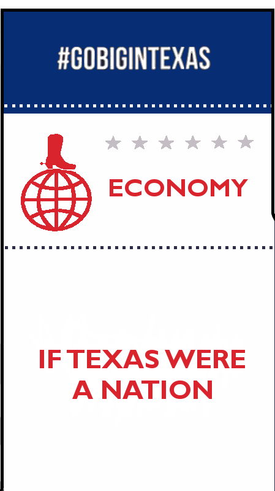
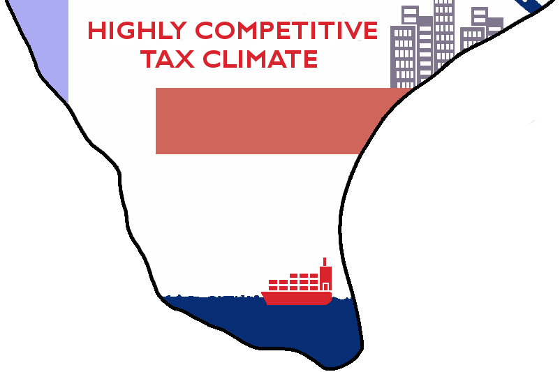

GO BIG IN TEXAS® promotes Texas economic development and provides valuable information for
companies looking to expand or relocate in the Lone Star State.
GO BIG IN TEXAS® is the official brand for the Texas Economic Development Division within the Office of the
Governor.


 


